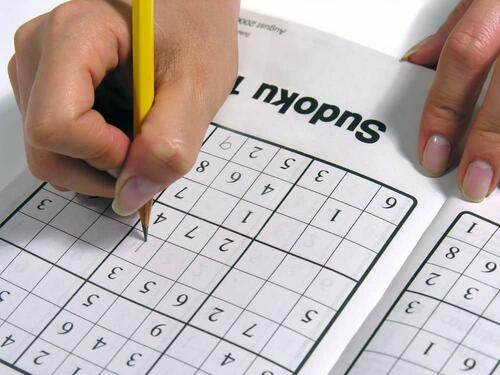

- This is a picture of a sudoku game
- This is a picture of me
- I am at Timeout Square in Westloop

- This is a picture of someone playing sudoku
Our Sudoku Website is a free online collection of designs that help people all over the world
think, create and make new Sudoku versions at the three easy, normal and difficult levels .
We’re the ideal site to challenge your habilities to find solutions meanwhile having great fun,
There is a Sudoku game for people of any age .